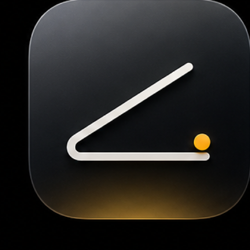
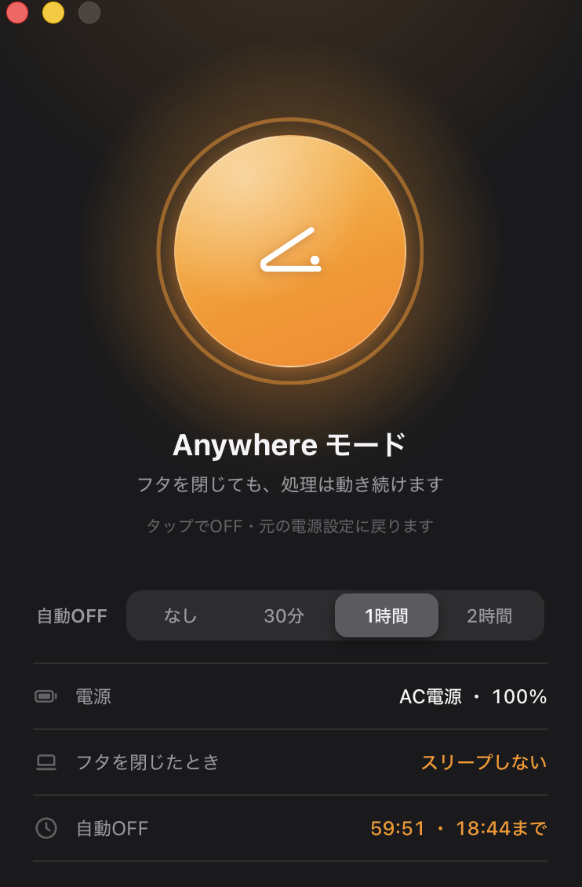

フタを閉じて、ランチへ
戻る頃には、テストもビルドも終わっている。

anywhere時間を選んで、フタを閉じるだけ。カバンの中でも、Claude Codeは走り続ける。
macOS 13+ 対応 | Apple Silicon / Intel 両対応
NO TERMINAL REQUIRED
パネルで30分・1時間・2時間を選ぶだけ。タップでOFFに戻せて、 電源・テザリング・フタを閉じたときの挙動も同じ画面で確認できます。

戻る頃には、テストもビルドも終わっている。
テザリングにつないだまま閉じれば、電車でもAIとクローラーは働き続ける。
寝ている間に、すべて自動で。
HOW IT WORKS
Macは普段、フタを閉じた瞬間に眠り、走っていたジョブも一緒に止まります。 anywhereは、あなたが決めた時間だけMacを眠らせない。 だから、閉じてカバンに入れても仕事は続きます。
その瞬間から、放っておいても、フタを閉じても、Macは眠らなくなる。
iPhoneのテザリングにつないでおけば、歩いている間もジョブは走り続ける。接続と電源の状態はパネルでひと目。
選んだ時間で設定は自動で元通り。消し忘れの心配はありません。
DOWNLOAD
ダウンロードして開くだけ。インストールが終わると、チュートリアルが自動で始まります。
macOS 13+（Apple Silicon / Intel）・Windows 10/11。 過去のバージョンは Releases から。